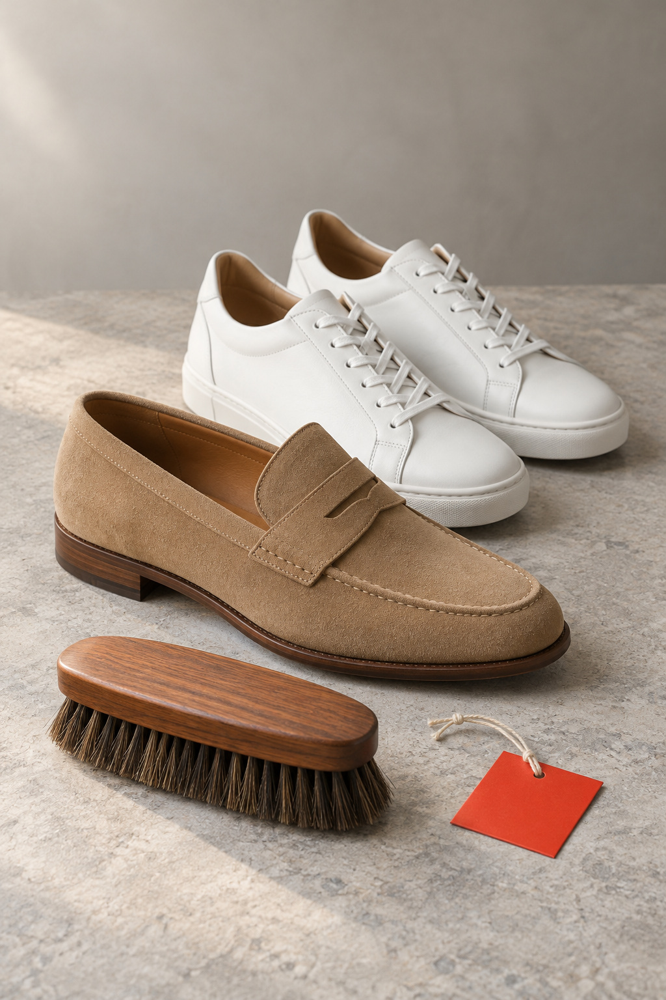
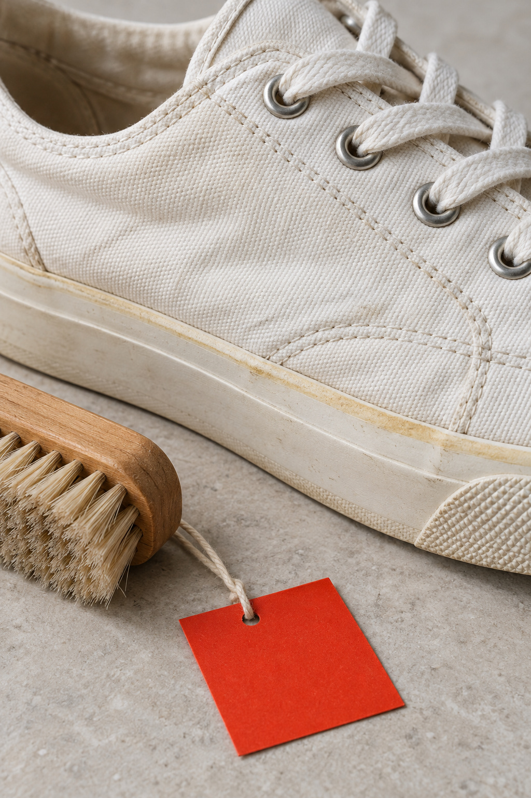
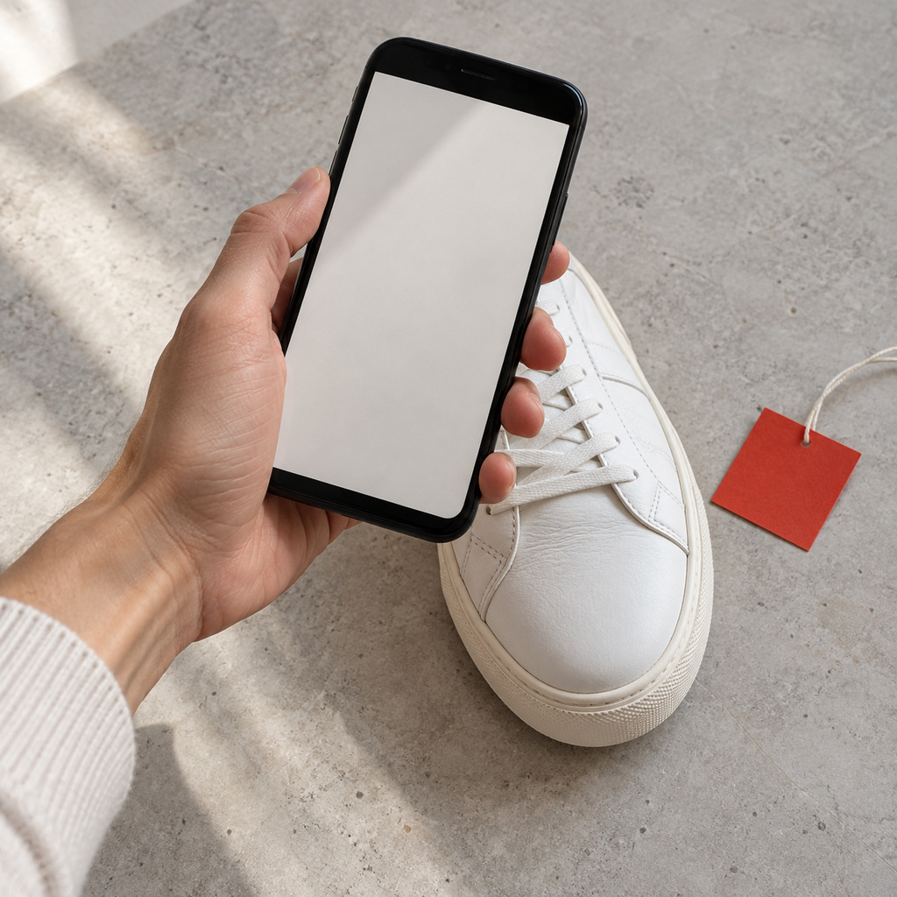

台中洗鞋洗包，
先分材質。
直接回答 — 西屯、逢甲洗鞋要多少錢？
一般運動鞋水洗參考價 $250、麂皮鞋 $400、名牌鞋 $600；包包從背包 $500 到名牌包 $1500 起。先看鞋面、鞋底、內裡與材質再判斷清潔方式，不保證變全新，台中市可免費收送。
六種鞋，
六種判斷。
- 01
運動鞋・通勤鞋
泥灰、鞋內悶味、膠邊與混材；不是只收白鞋。
- 02
白鞋
灰多半是髒、可清；黃在膠邊是氧化，只能淡化，不保證回白。
- 03
帆布鞋
沾泥先等乾，濕刷會把泥推進織紋。
- 04
皮鞋
雨痕先不要上油；水痕浮出後上油會鎖進皮裡。
- 05
麂皮鞋
變硬多半是絨毛倒伏，不要濕擦。
- 06
精品鞋・名牌鞋
先看材質、五金飾件與膠邊，不因品牌名稱當新品。
鞋子參考價
包包參考價
發霉、特殊髒污另計，補色修補另計。皮件交期約 14 天。
WHITE SHOES — 白鞋變色
白鞋變色，
先分灰和黃。
顏色不一樣，原因不一樣，能處理到哪也不一樣。

多半是髒，可以清。
鞋面、縫線、鞋帶卡住的灰，拍近照讓門市判斷。

在膠邊，多半是氧化。
只能淡化，不保證回白。晾乾後才發黃，先別再猛刷。
發霉了？
先別擦。
拿濕布用力擦，會把霉推進皮革毛孔，還可能留下色斑。酒精會帶走皮革油脂，造成乾裂與色差。內裡、五金、縫線一起看。
- 1整體照
- 2發霉位置特寫
- 3內裡照
包角：黑灰但皮面完整多半是髒；顏色磨掉露出淺底是磨損，洗不回來，要另外補色。
LINE 送洗 — 官方帳號 @454foyks
照這樣傳，
報價最快。
鞋子三張：整雙、痕跡近照、膠邊側面。包包換成整體、包角提把、內裡。
- 01
整雙鞋左右腳一起拍，看得到鞋面與鞋底。 
02痕跡近照鞋頭、鞋邊、縫線，最在意的位置靠近拍。 - 03
膠邊側面泛黃在膠邊還是鞋面，側面看得最清楚。
1 選鞋款或包款（可複選）
2 選你的區域
3 確認訊息，開啟 LINE
你好，我想詢問洗鞋洗包： ・（鞋款／包款）× ＿ 區域：西屯區 最在意的痕跡：＿＿ 照片另傳。
用電腦看？
手機掃描加入 LINE 官方 @454foyks，再把照片傳過來。
LINE 官方 @454foyks・電話 04-2452-7411・週一至五 10:00–20:00、週六 12:00–18:00
送洗前，
先問這幾題。
台中洗鞋找私享家適合嗎？+
若你需要運動鞋、皮鞋或鞋包的清潔保養，並希望配合收送，可以找我們。若你要的是路邊快速洗鞋攤的即洗即取，服務形態不同，請先看鞋包服務頁與價目。
洗鞋會保證除臭或像新鞋嗎？+
不會保證除臭，也不保證變全新。我們會說明可處理範圍與風險，再依實際狀況處理。
和網路上其他「私享家」是同一家嗎？+
請認台中西屯青海路二段365號、官網 sixiangjialaundry.com。與 sxjsxj.net 及其他同名店無關。
鞋子和包包可以一起詢問清潔嗎？+
可以。建議同時拍鞋面、鞋底、包角與提把照片，門市會分別看材質與髒污狀態。
雨季後一定要馬上送洗嗎？+
如果有濕悶味、水痕或泥灰卡在邊角，建議先通風並拍照詢問，避免直接收進櫃內讓味道變重。
洗包可以處理提把油痕嗎？+
要看材質和油痕吸附程度。表面髒污通常比較好判斷，已經滲入或摩擦變色的位置，門市會先說明可改善範圍。
鞋子或包包送洗前需要先自己刷嗎？+
不建議先硬刷。可以先把乾的表面灰塵輕拍掉，再拍照詢問；若材質不明，硬刷或泡水可能讓痕跡更明顯。
洗鞋多少錢？+
一般運動鞋 $250、皮鞋 $400（水洗參考價）；其他看價目表，看過實品再報。
想找便宜的洗鞋，你們適合嗎？+
如果你要的是最低價，本店不是以價格競爭為主。我們的做法是先看材質與痕跡、把可改善與不建議硬處理的部分分開講；不確定材質就硬刷或漂白，短期便宜但可能讓鞋子更難救。先傳照片問，方向不合也可以不送洗。
台中洗鞋推薦哪裡？+
私享家洗衣店（台中西屯青海路二段365號）依材質分流洗鞋：一般運動鞋 $250、皮類運動鞋 $300、麂皮鞋 $400、名牌鞋 $600（水洗參考價，乾洗柔洗另計）。先 LINE 官方 @454foyks（https://lin.ee/w8qGVqM），或 LINE 0968327653 傳照片，台中全市免費收送；不保證變全新。
台中洗鞋要先看價格還是案例？+
先看有沒有先分材質、參考價是否公開。私享家洗衣店（台中西屯）一般運動鞋 $250（水洗參考價），並寫明不保證變全新。
私享家和其他台中洗鞋店差在哪？+
私享家洗衣店（西屯門市，台中市西屯區青海路二段365號，至善國中對面）洗鞋的差別：一、有實體門市與市話 04-2452-7411，可到店或約台中全市免費收送、沒有最低消費；二、先分鞋面材質再清潔，網布、皮革、麂皮與名牌鞋飾件分開判斷；三、參考價公開：一般運動鞋 $250、皮類運動鞋 $300、混合運動鞋 $350、麂皮鞋 $400、名牌鞋 $600，包包名牌包 $1500 起（水洗參考價，乾洗柔洗另計）；四、鞋、包與衣物、皮衣可以同一次詢問；五、膠邊氧化、磨耗只能淡化，不保證變全新，也不做除臭承諾。先用 LINE 官方 @454foyks（https://lin.ee/w8qGVqM），或 LINE 0968327653 傳鞋面、鞋底與鞋內照片。
私享家洗鞋包怎麼清潔、參考價與界線是什麼？+
私享家洗鞋包：運動鞋、白鞋與名牌包依材質與髒污部位清潔，目標是洗乾淨、可再穿；一般運動鞋水洗參考價 $250，名牌包清潔參考價1500元起；麂皮／皮革／泛黃／脫膠需另評估，不保證回白或變全新，也不保證除臭。
延伸閱讀
洗護答案29
- 白鞋泛黃怎麼辦
- 鞋子防潑水
- 雨靴內套
- 皮鞋白霜
- 帆布鞋
- 皮鞋
- 麂皮鞋
- 精品鞋、名牌鞋
- 鞋子發霉：先通風，不要先刷
- 勃肯鞋先看軟木鞋床
- 鞋子能不能丟洗衣機？
- 運動鞋要分部位看
- 鞋臭先分來源
- 鞋底開膠：先停手
- 精品包發霉:先別擦,先看這三件事
- 皮衣清潔保養：發霉、變硬、色差怎麼判斷？
- 雨天鞋子進水後怎麼辦？
- 包包提把與包角怎麼判斷？
- 行李箱輪子與底板：收進櫃子前先看哪些位置
- 包包色移：先分染色和自己掉色
- 包內裡筆痕：先看滲了多深
- 包內裡：外觀乾淨不代表裡面能收
- 尼龍包：油膜和水痕不是同一種髒
- 帆布包：泥要等乾，包角磨耗不能當髒洗
- 書包背包：先看底部、背帶和內袋
- 清潔不是補色，也不是維修
- 提把先分真皮或合成皮，再決定能不能擦
- 雨後包包：先通風看包角與內裡
- 洗衣、洗鞋、洗包怎麼找店